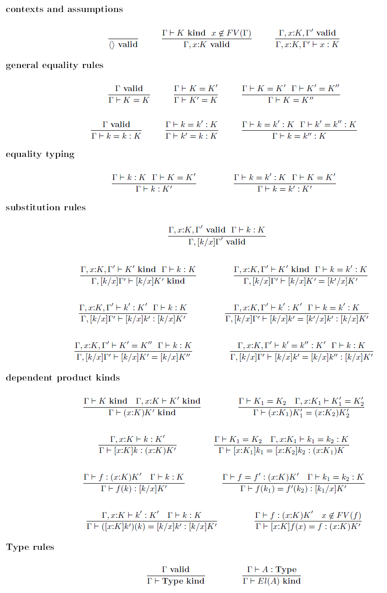

Recent posts#
2023-08-20 References on information cohomology
Some references on the cohomological nature of various information theoretic concepts such as entropy and relative information.
Markov categories were defined by Fritz [Fri20].
2023-06-26 All you need is relative information
SLT has taught me that relative information (or Kullback-Leibler divergence) is all you need. For instance, the level sets of relative information give us state density functions, whose Fourier, Laplace and Mellin transforms reveal different facets of learning algorithms and their ability to generalize. In this talk, I will outline two ongoing projects involving relative information. The first project explores the information theory of time series, for the purpose of understanding language models and reinforcement learning. Using relative information rate, we derive stochastic learning algorithms for spiking neural networks with memory. The second project explores cohomological generalizations of relative information, building on recent work by Pierre Baudot and Daniel Bennequin and by Tai-Danae Bradley. The hope is to uncover new tools for studying non-statistical spaces, by analyzing the level sets of generalized relative information and their transforms.
2023-04-01 Relative information is motivic
A (Hochschild) cohomological view of relative information must be motivic!
Vigneaux gives some hints of this [].
2022-05-28 Likelihood, greed and temperature in sequence learning
Imagine we have a model \(D(w)\) of a dynamical system with states \(s \in S,\) that is parametrized by some weight \(w \in W\). Each state \(s\) comes with a set \(N(s) \subset S\) of neighbors and an associated energy function \(E(s'|s,w) \in \mathbb{R}\) that assigns an energy to each neighbor \(s' \in N(s)\).
For simplicity, we assume the following dynamics: when the system is in state \(s\), it picks the neighbor \(s'\) with the lowest energy \(E(s'|s,w)\) and jumps to state \(s'\) in the next time step (more to come later about what we mean by time step).
2022-01-22 Parametric typeclasses aid generalization in program synthesis
We envision programming being done in top-down fashion. The human describes the goal (e.g. sorting), and the machine reduces it to smaller subgoals based on well-known heuristics (e.g. divide and conquer). The easier subgoals could even be fulfilled automatically. This top-down heuristics approach will be more amenable to machine learning. See my Topos Institute talk for more info.
The problem with the current approach in type theory is as follows.
2022-01-22 Information topos theory - motivation
Relative information (also known as the Kullback-Leibler divergence) is an important fundamental concept in statistical learning and information theory.
The (conditional) relative information
2021-09-09 All you need is relative information
Relative information (relative entropy, KL divergence) and variational inference are powerful tools for deriving learning algorithms and their asymptotic properties, for both static systems and dynamic systems. The goal of this talk is to motivate a general online stochastic learning algorithm for stochastic processes with latent variables or memory, that provably converges under some regularity conditions. Please visit https://bit.ly/3kmovql for details.
In the first half of the talk, we study static systems, viewing maximum likelihood and Bayesian inference through the lens of relative information. In particular, their generalization errors may be derived by resolving the singularities of relative information. We then frame the two learning algorithms as special cases of variational inference with different computational constraints.
2021-06-05 Spiking neural networks
In this post, we study a class of spiking network models based on continuous-time Markov chains with mutable variables.
Using a relative inference recipe for online learning, we derive local Hebbian learning rules for the spiking network which are provably convergent to local minima of the relative information objective.
2021-06-01 Convergence of biased stochastic approximation
Using techniques from biased stochastic approximation [KMMW19], we prove under some regularity conditions the convergence of the online learning algorithm proposed previously for mutable Markov processes.
Recall that the algorithm is described by the following updates.
2021-05-10 Path integrals and the Dyson formula
One of the deepest results in quantum field theory, to me, is the Dyson formula [nLa]. It describes the solution to the differential equation
in terms of the exponential of the path integral of the operator \(A(t)\),
2021-04-22 Proofs as programs - challenges and strategies for program synthesis
The Curry-Howard correspondence between proofs and programs suggests that we can exploit proof assistants for writing software. I will discuss the challenges behind a naïve execution of this idea, and some preliminary strategies for overcoming them. As an example, we will organize higher-order information in knowledge graphs using dependent type theory, and automate the answering of queries using a proof assistant. In another example, we will explore how decentralized proof assistants can enable mathematicians or programmers to work collaboratively on a theorem or application. If time permits, I will outline connections to canonical structures, reflection (ssreflect), transport, unification and universe management.
2021-03-23 Biased stochastic approximation with mutable processes
The goal of this post is to derive a general online learning recipe for training a mutable process \(\{Z_t,X_t\}\) to learn the true distribution \(Q_*(X)\) of a partially-observed Markov process \(\{X_t\}\). The recipe returns a generative distribution \(P(Z,X)\) whose marginal \(P(X)\) approximates \(Q_*(X).\)
The variables \(Z\) of the mutable process are auxiliary variables that assist in inference and computation. During training, the distribution of \(Z\) given \(X\) is controlled by a discriminative model \(\{Q(Z\vert X)\}.\) Our method works in both discrete time and continuous time. We assume in the mutable process that for each time \(t,\) the variables \(Z_t\) and \(X_t\) are conditionally independent of each other given their past.
2021-03-22 Relative inference with mutable processes
We introduce a information-theoretic objective, which is a form of relative information between a discriminative model and a generative model, for learning processes using models with mutable variables. This technique is known as relative inference (also called approximate inference, variational inference or variational Bayes). Such a technique is useful, for instance, for learning processes that contain latent variables.
We discuss natural constraints on the discriminative and generative models, and the consequences of these constraints on:
2021-03-21 Process learning with relative information
Over the next few posts, we will derive a distributed learning algorithm for spiking neural networks with mutable variables that minimizes some natural notion of relative information and provably converges over time. We will model these spiking neural networks with stochastic processes: both discrete-time and continuous-time processes, with or without mutable variables.
In this post, we give a general overview of information-theoretic approaches to training stochastic processes, while postponing discussions about issues that arise from mutable variables.
2020-12-01 Biased stochastic approximation
We explore the convergence of continuous-time ordinary differential equations and their discrete-time analogs, such as stochastic approximation and gradient descent, through the lens of Lyapunov theory [B+98] [LR15]. From this perspective, we will study biased stochastic approximation [KMMW19] where the expectation of the stochastic updates conditioned on the past (which we call the conditional expectation) is not the same as the expectation of the stochastic updates under the stationary distribution (which we call the total expectation).
This post is a continuation from our series on spiking networks, path integrals and motivic information.
2020-10-23 Machine learning with relative information
We will reframe some common machine learning paradigms, such as maximum likelihood, stochastic gradients, stochastic approximation and variational inference, in terms of relative information.
This post is a continuation from our series on spiking networks, path integrals and motivic information.
2020-10-14 Path integrals and continuous-time Markov chains
We give an introduction to continuous-time Markov chains, and define path measures for these objects.
This post is a continuation from our series on spiking networks, path integrals and motivic information.
2020-10-07 Motivic relative information
So far, our definition of relative information studies the divergence between real-valued measures. In this post, we will explore motivic measures which take values more generally in some ring \(R\), and have some fun applying motivic relative information to zeta functions.
This post is a continuation from our series on spiking networks, path integrals and motivic information.
2020-10-05 Zeta functions, Mellin transforms and the Gelfand-Leray form
We outline the similarities between zeta functions appearing in number theory and in statistical learning.
This post is a continuation from our series on spiking networks, path integrals and motivic information.
2020-09-18 Conditional relative information and its axiomatizations
In this post, we will study the conditional form of relative information. We will also look at how conditional relative information can be axiomatized and extended to non-real-valued measures.
This post is a continuation from our series on spiking networks, path integrals and motivic information.
2020-09-08 Building foundations of information theory on relative information
The relative information [BF14] (also known as relative entropy or Kullback-Leibler divergence) is an important object in information theory for measuring how far a probability measure \(Q\) is from another probability measure \(P.\) Here, \(Q\) is usually the true distribution of some real phenomenon, and \(P\) is some model distribution.
In this post, we emphasize that the relative information is fundamental in the sense that all other interesting information-theoretic objects may be derived from it. We also outline how relative information can be defined without probability mass functions or probability density functions, or even in the absence of absolute continuity.
2020-08-28 Motivic information, path integrals and spiking networks
I’m writing a series of posts that will explore the connections between these topics. Here is a rough outline of the series, which I will fill in slowly over time.
Building foundations of information theory on relative information
2020-08-07 Processes and variety maximization
“It’s a theory about processes, about the sequences and causal relations among things that happen, not the inherent properties of things that are. The fundamental ingredient is what we call an “event.” Events are things that happen at a single place and time; at each event there’s some momentum, energy, charge or other various physical quantity that’s measurable. The event has relations with the rest of the universe, and that set of relations constitutes its “view” of the universe. Rather than describing an isolated system in terms of things that are measured from the outside, we’re taking the universe as constituted of relations among events. The idea is to try to reformulate physics in terms of these views from the inside, what it looks like from inside the universe.”
“There are many views, and each one has only partial information about the rest of the universe. We propose as a principle of dynamics that each view should be unique. That idea comes from Leibniz’s principle of the identity of indiscernibles. Two events whose views are exactly mappable onto each other are the same event, by definition. So each view is unique, and you can measure how distinct one is from another by defining a quantity called the “variety.” If you think of a node on a graph, you can go one step out, two steps out, three steps out. Each step gives you a neighborhood — the one-step neighborhood, the two-step neighborhood, the three-step neighborhood. So for any two events you can ask: How many steps do you have to go out until their views diverge? In what neighborhood are they different? The fewer steps you have to go, the more distinguishable the views are from one another. The idea in this theory is that the laws of physics — the dynamics of the system — work to maximize variety. That principle — that nature wants to maximize variety — actually leads, within the framework I’ve been describing, to the Schrödinger equation, and hence to a recovery, in an appropriate limit, of quantum mechanics.” - Les Smolin
2020-07-23 Adjunctions
Read about the Curry-Howard-Lambek correspondence. Some call it the holy trinity of Logic, Computation and Categories. Lambek adds the “objects as propositions” and “arrows as proofs” part to the mix. You may need to learn some basic category theory.
http://arca.di.uminho.pt/quantum-logic-1920/CategoriesAndLogic.pdf
2020-05-26 Directed spaces and types
Joint work with Jin Xing Lim, Liang Ze Wong, Georgios Piliouras.
There is a concept of Directed Spaces. Since Types can be thought of as Spaces, the question is what kind of additional information we would need to construct such a Type (e.g. for undirected types, we can construct these types using identity types as additional information).
2020-05-21 Logical frameworks
Logical frameworks are formal meta-languages for specifying different kinds of object theories (e.g. logical theories and type theories).
LF is a logical framework [HHP93] that formalizes Martin-Lof’s logical framework and is itself based on type theory. It was designed to unify similarities between two forms of judgments.
2018-05-26 Machine reasoning and deep spiking networks
This is a short presentation which I shared at the Visions of AI Futures workshop organized by AI Singapore. I talked about the goal of building next-generation machine intelligence, through neural and symbolic modules that work seamlessly together to accomplish intuitive reasoning, as well as efficient, effective neural chips for every device.
2017-05-08 Artificial general intelligence for the internet of things
What do we need to achieve artificial general intelligence? How do we distribute intelligence over the internet-of-things? We’ll dive deep into the heart of the matter, which is machine reasoning. Following recent advances in mathematical foundations and homotopy type theory, we conclude that the crux is to formally separate intents from implementations. We can teach neural networks to understand these intents and to use a divide-and-conquer method for compiling these intents into implementations. Our goal is to outline a distributed strategy for accomplishing this moonshot.
2016-05-03 Exercise on sparse autoencoders
This exercise is the first of several posts I am writing, for those who want a mathematical and hands-on introduction to deep neural networks.
Read the series of notes on the topic of “Sparse Autoencoder” in the UFLDL Tutorial.
2016-05-03 Exercise on deep neural networks
Read the notes and complete the exercises for the section on “Building Deep Networks for Classification” in the UFLDL Tutorial. Complete all the programming tasks in Python. No starter code will be given for these exercises, but you may refer to the given Matlab codes for hints if you are stuck
2016-02-04 Hashing
Hashing is a method for compressing information from a high dimensional space into a smaller space. Hashing is commonly used in computer science to help us with many tasks. For instance, if two documents are (randomly) hashed to the same code, it is very likely that they are exactly the same. Also, in computer vision, we sometimes hash images in a clever way to find similar or related images through their codes.
Hashing goes all the way back to Shannon, the father of information theory, who looked at random hashes in his source coding theorem. There are also interesting connections to compressed sensing which have not been fully explored as yet.
2014-08-13 Statistics and machine learning
Below are some introductory texts for probability, statistics, machine learning and statistical learning theory. They are sorted roughly according to difficulty, so you can find a book that is suitable for where you are and what you need.
A First Course in Probability (9th Edition)
Sheldon M. Ross
This book covers combinatorics and stuff. For undergraduates. Might be too easy.2014-08-02 Boltzmann machines and hierarchical models
The restricted Boltzmann machine (RBM) is a key statistical model used in deep learning. They are special form of Boltzmann machines where the underlying graph is a bipartite graph. Personally, I am more interested in Boltzmann machines because they represent a class of discrete energy models where the energy is quadratic. The dynamics of the model bears a lot of resemblance to those of Hopfield networks and Ising models. As an aside, normal distributions are continuous energy models where the energy is quadratic and positive definite.
If the energy of the model is a polynomial of higher degree (e.g. cubic, quartic), then the model is hierarchical. They are a kind of graphical model where the underlying graph is a simplicial complex (a special type of hypergraph). Here are some slides and papers on hierachical models:
2012-07-13 Studying model asymptotics with singular learning theory
Singular statistical models occur frequently in machine learning and computational biology. An important prob-lem in the learning theory of singular models is determin-ing their asymptotic behavior for massive data sets. In this talk, we give a brief introduction to Sumio Watanabe’s Singular Learning Theory, as outlined in his book “Algebraic Geometry and Statistical Learning Theory.” We will also explore the rich algebraic geometry and combinatorics that arise from studying the asymptotics of Bayesian integrals.